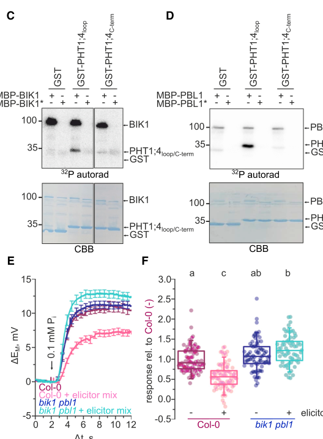
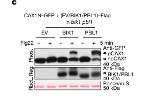

PBL1 (PBS1-LIKE 1, also called BLK or CCE5) is a receptor-like cytoplasmic kinase of subfamily VII in Arabidopsis thaliana and the closest paralog of BIK1. It is a myristoylated serine/threonine protein kinase anchored at the cytoplasmic face of the plasma membrane, where it associates with cell-surface pattern recognition receptors including FLS2, EFR, PEPR1 and MIK2, and becomes phosphorylated within minutes of ligand perception. Acting partly redundantly with BIK1, PBL1 relays receptor activation to early immune outputs: it is required for full cytosolic calcium elevations triggered by flg22, elf18 and AtPep1 (but not by chitin), contributes to the RBOHD-dependent oxidative burst and is the main RLCK for flg22-induced root growth inhibition. Direct substrates include the cytosolic loops of the PHT1;1 and PHT1;4 phosphate transporters, linking immune signalling to inhibition of phosphate uptake, and the autoinhibitory serine cluster of the vacuolar Ca2+/H+ exchangers CAX1 and CAX3. PBL1 is also targeted for cleavage by the Pseudomonas syringae effector protease AvrPphB.
| GO Term | Evidence | Action | Reason |
|---|---|---|---|
|
GO:0002221
pattern recognition receptor signaling pathway
|
IBA
GO_REF:0000033 |
ACCEPT |
Summary: PBL1 relays signalling from several cell-surface PRRs (FLS2, EFR, PEPR1, MIK2) as a BIK1-like RLCK; the PAINT node covering RLCK-VII members fits the experimental data.
Reason: PBL1 associates with PRRs, is phosphorylated upon ligand perception and is needed for PRR-triggered Ca2+ elevation; it does the work of relaying the signal by phosphorylating downstream substrates. The IBA is at an appropriate level and agrees with the BIK1 review.
Supporting Evidence:
PMID:20413097
In unstimulated plants, BIK1 and PBL1 interact with FLS2 and are rapidly phosphorylated upon FLS2 activation by its ligand flg22.
PMID:23431184
PEPR1 specifically interacts with receptor-like cytoplasmic kinases botrytis-induced kinase 1 (BIK1) and PBS1-like 1 (PBL1) to mediate Pep1-induced defenses.
PMID:25522736
Using these lines, a survey of different MAMPs/DAMPs showed reduced calcium responses to flg22, elf18 and AtPep1 but a normal response to chitin octamers (ch8) in cce5 (Figure 2).
PMID:34535661
Nevertheless, the MIK2-BAK1 receptor complex activation by SCOOPs triggers phosphorylation of BIK1 and PBL1 in transducing signaling to downstream events.
file:ARATH/PBL1/PBL1-deep-research-falcon.md
These findings place it immediately downstream of plasma-membrane pattern recognition
|
|
GO:0002237
response to molecule of bacterial origin
|
IMP
PMID:25522736 Microbe-associated molecular pattern-induced calcium signali... |
ACCEPT |
Summary: pbl1/cce5 mutants show reduced cytosolic Ca2+ responses to flg22 and elf18 and reduced flg22-induced root growth inhibition.
Reason: Mutant phenotype in responses to the bacterial MAMPs flg22 and elf18 in the paper cited (full text available). PBL1 acts as a signalling kinase in these responses (receptor-proximal phosphorylation relay), so this is a direct role rather than an indirect effect. Treated as core, consistent with the BIK1 review.
Supporting Evidence:
PMID:25522736
Using these lines, a survey of different MAMPs/DAMPs showed reduced calcium responses to flg22, elf18 and AtPep1 but a normal response to chitin octamers (ch8) in cce5 (Figure 2).
PMID:25522736
PBL1 plays a more important role than BIK1 in the late root growth inhibition response to flg22
|
|
GO:0004672
protein kinase activity
|
IEA
GO_REF:0000002 |
MODIFY |
Summary: Generic protein kinase activity from InterPro kinase-domain mapping. Correct but less specific than the serine/threonine kinase activity supported for PBL1.
Reason: PBL1 has demonstrated autophosphorylation and directly phosphorylates protein substrates (PHT1 loops, CAX S-cluster); serine/threonine kinase activity (GO:0004674) is the appropriate specific term, already supported by IBA.
Proposed replacements:
protein serine/threonine kinase activity
Supporting Evidence:
PMID:25522736
Taken together, these three cce5 mutations led to the loss of PBL1 kinase activity
PMID:38418878
the associated cytoplasmic kinases BIK1 and PBL1, which phosphorylate the same S-cluster in CAXs to modulate Ca2+ signals in immunity
|
|
GO:0004674
protein serine/threonine kinase activity
|
IBA
GO_REF:0000033 |
ACCEPT |
Summary: Serine/threonine kinase activity inherited across the RLCK-VII clade; supported in PBL1 by autophosphorylation and in vitro phosphorylation of transporter substrates.
Reason: Core molecular function. cce5 kinase-domain alleles abolish autophosphorylation and loss of function; recombinant PBL1 but not kinase-dead PBL1 phosphorylates PHT1;4/PHT1;1 cytosolic loops, and PBL1 phosphorylates the CAX1/CAX3 serine cluster.
Supporting Evidence:
PMID:25522736
Taken together, these three cce5 mutations led to the loss of PBL1 kinase activity
PMID:34919806
Indeed, maltose-binding protein (MBP)-fused BIK1 and PBL1, but not their kinase-dead variants, phosphorylated the glutathione S-transferase (GST)-fused cytosolic loop of PHT1;4
PMID:38418878
the associated cytoplasmic kinases BIK1 and PBL1, which phosphorylate the same S-cluster in CAXs to modulate Ca2+ signals in immunity
|
|
GO:0004674
protein serine/threonine kinase activity
|
IEA
GO_REF:0000003 |
ACCEPT |
Summary: EC 2.7.11.1 mapping; consistent with experimental kinase evidence.
Reason: Agrees with the IBA and with direct kinase assays on PBL1.
Supporting Evidence:
PMID:25522736
Taken together, these three cce5 mutations led to the loss of PBL1 kinase activity
PMID:34919806
Indeed, maltose-binding protein (MBP)-fused BIK1 and PBL1, but not their kinase-dead variants, phosphorylated the glutathione S-transferase (GST)-fused cytosolic loop of PHT1;4
|
|
GO:0005515
protein binding
|
IPI
PMID:20413097 Receptor-like cytoplasmic kinases integrate signaling from m... |
REMOVE |
Summary: Co-immunoprecipitation of PBL1 with the flagellin receptor FLS2 (Q9FL28). Bare protein binding is uninformative.
Reason: Removal does not mean the interaction is false: the receptor association is real and biologically central (PBL1 is a PRR-associated RLCK that is phosphorylated upon receptor activation), but bare GO:0005515 conveys no function; the relationship is captured by the kinase MF and PRR signalling BP. Treated as in the BIK1 review.
Supporting Evidence:
PMID:20413097
In unstimulated plants, BIK1 and PBL1 interact with FLS2 and are rapidly phosphorylated upon FLS2 activation by its ligand flg22.
|
|
GO:0005515
protein binding
|
IPI
PMID:23431184 BIK1 interacts with PEPRs to mediate ethylene-induced immuni... |
REMOVE |
Summary: Interaction of PBL1 with the Pep1 receptor PEPR1 (Q9SSL9). Bare protein binding is uninformative.
Reason: Removal does not mean the interaction is false: the receptor association is real and biologically central (PBL1 is a PRR-associated RLCK that is phosphorylated upon receptor activation), but bare GO:0005515 conveys no function; the relationship is captured by the kinase MF and PRR signalling BP. Treated as in the BIK1 review.
Supporting Evidence:
PMID:23431184
PEPR1 specifically interacts with receptor-like cytoplasmic kinases botrytis-induced kinase 1 (BIK1) and PBS1-like 1 (PBL1) to mediate Pep1-induced defenses.
|
|
GO:0005524
ATP binding
|
IEA
GO_REF:0000002 |
ACCEPT |
Summary: ATP binding inferred from the protein kinase domain and ATP-binding site signature.
Reason: PBL1 is an active kinase (autophosphorylation abolished by kinase-domain mutations), so ATP binding by the canonical kinase cleft is expected. Supportive rather than informative.
Supporting Evidence:
PMID:25522736
Taken together, these three cce5 mutations led to the loss of PBL1 kinase activity
|
|
GO:0005829
cytosol
|
HDA
PMID:28887381 Global Analysis of Membrane-associated Protein Oligomerizati... |
KEEP AS NON CORE |
Summary: Detected in a proteomic membrane/cytosol fractionation study (protein correlation profiling).
Reason: PBL1 is a myristoylated peripheral membrane protein whose functional location is the cytoplasmic face of the plasma membrane; a soluble/cytosolic pool is plausible for a lipid-anchored RLCK and the high-throughput observation is not contradicted, but the cytosol is not where its signalling function has been demonstrated.
Supporting Evidence:
PMID:25522736
Hence, myristoylation and proper targeting of PBL1 to plasma membrane is essential for signaling function of PBL1.
|
|
GO:0005886
plasma membrane
|
IBA
GO_REF:0000033 |
ACCEPT |
Summary: Plasma membrane localization inherited across RLCK-VII; experimentally supported for PBL1.
Reason: Myristoylation-dependent plasma membrane targeting is required for PBL1 signalling; the G2A variant fails to complement.
Supporting Evidence:
PMID:25522736
Hence, myristoylation and proper targeting of PBL1 to plasma membrane is essential for signaling function of PBL1.
|
|
GO:0005886
plasma membrane
|
IDA
PMID:25522736 Microbe-associated molecular pattern-induced calcium signali... |
ACCEPT |
Summary: Plasma membrane location supported by G2A myristoylation-site analysis in the cited paper.
Reason: The paper shows the G2A variant is not phosphorylated after flg22 and fails to complement calcium and root phenotypes, concluding that plasma membrane targeting is essential; consistent with the IBA and with BIK1.
Supporting Evidence:
PMID:25522736
Hence, myristoylation and proper targeting of PBL1 to plasma membrane is essential for signaling function of PBL1.
|
|
GO:0005886
plasma membrane
|
IEA
GO_REF:0000044 |
ACCEPT |
Summary: UniProt subcellular location mapping (cell membrane, lipid anchor).
Reason: Consistent with experimental evidence.
Supporting Evidence:
PMID:25522736
Hence, myristoylation and proper targeting of PBL1 to plasma membrane is essential for signaling function of PBL1.
|
|
GO:0009507
chloroplast
|
ISM
GO_REF:0000122 |
REMOVE |
Summary: AtSubP sequence-based prediction of chloroplast localization.
Reason: PBL1 is an N-myristoylated kinase that functions at the plasma membrane; no experimental evidence places it in plastids, and the single-method prediction conflicts with the experimentally supported location.
Supporting Evidence:
PMID:25522736
Hence, myristoylation and proper targeting of PBL1 to plasma membrane is essential for signaling function of PBL1.
|
|
GO:0106310
protein serine kinase activity
|
IEA
GO_REF:0000116 |
ACCEPT |
Summary: Rhea-based protein serine kinase activity; a child-like specification of the Ser/Thr kinase activity.
Reason: Correct for a Ser/Thr kinase that phosphorylates serine clusters (CAX S-cluster); redundant with GO:0004674 but not wrong.
Supporting Evidence:
PMID:38418878
the associated cytoplasmic kinases BIK1 and PBL1, which phosphorylate the same S-cluster in CAXs to modulate Ca2+ signals in immunity
|
|
GO:1900424
regulation of defense response to bacterium
|
IMP
PMID:25522736 Microbe-associated molecular pattern-induced calcium signali... |
MARK AS OVER ANNOTATED |
Summary: Assigned from the calcium-signalling mutant study; that paper did not test PBL1 in bacterial infection and notes that PBL1 is not needed for flg22-induced resistance to Pseudomonas syringae.
Reason: The phenotypes in PMID:25522736 (full text read) are reduced MAMP-induced Ca2+ elevation and root growth inhibition, which are captured by GO:0002237 and PRR signalling. The paper explicitly states that BIK1, not PBL1, is important for flg22-mediated resistance to P. syringae. The term is not entirely wrong (PTI outputs contribute to antibacterial defense, and AvrPphB targets PBL1), but bacterial-defense regulation is not shown for PBL1 itself.
Supporting Evidence:
PMID:25522736
BIK1, but not PBL1, has been shown to play an important role in flg22-mediated resistance to subsequent Pseudomonas syringae infection
PMID:25522736
Using these lines, a survey of different MAMPs/DAMPs showed reduced calcium responses to flg22, elf18 and AtPep1 but a normal response to chitin octamers (ch8) in cce5 (Figure 2).
|
Q: Does PBL1 itself phosphorylate RBOHD? PBL1 binds the RBOHD N-terminus, but RBOHD phosphosite loss has only been measured in bik1 pbl1 double mutants and direct site-resolved phosphorylation was shown for BIK1.
Q: Does PBL1 contribute to chitin/CERK1 signalling at all, given that cce5/pbl1 mutants show a normal chitin-induced Ca2+ response?
Q: Should the direct PBL1-PHT1 kinase relationship be captured as a process annotation (e.g. negative regulation of phosphate transport) or only via has_input on the kinase activity?
Experiment: In vitro kinase assay of recombinant PBL1 versus kinase-dead PBL1 on the RBOHD N-terminus with phosphosite mapping, and chitin-induced ROS/RBOHD phosphorylation in pbl1 single and bik1 pbl1 double mutants.
The research report should be a detailed narrative explaining the function, biological processes, and localization of the gene product. Citations should be given for all claims.
You should prioritize authoritative reviews and primary scientific literature when conducting research. You can supplement
this with annotations you find in gene/protein databases, but these can be outdated or inaccurate.
We are specifically interested in the primary function of the gene - for enzymes, what reaction is catalyzed, and what is the substrate specificity? For transporters, what is the substrate? For structural proteins or adapters, what is the broader structural role? For signaling molecules, what is the role in the pathway.
We are interested in where in or outside the cell the gene product carries out its function.
We are also interested in the signaling or biochemical pathways in which the gene functions. We are less interested in broad pleiotropic effects, except where these elucidate the precise role.
Include evidence where possible. We are interested in both experimental evidence as well as inference from structure, evolution, or bioinformatic analysis. Precise studies should be prioritized over high-throughput, where available.
Identity verified. The protein specified by UniProt Q8H186 is Arabidopsis thaliana PBL1, encoded at At3g55450 and also called CCE5 or BLK. Genetic mapping and sequencing identified mutations in this locus in five independently isolated cce5 alleles. PBL1 is a 389-amino-acid PBS1-like receptor-like cytoplasmic kinase, in the RLCK-VII family; it is a distinct protein from both PBS1 and its close relative BIK1. Its experimentally observed autophosphorylation and the loss of activity caused by kinase-domain mutations agree with its annotated protein-kinase catalytic domain. (ranf2014microbeassociatedmolecularpatterninduced pages 2-5, ranf2014microbeassociatedmolecularpatterninduced pages 5-8, zhang2010receptorlikecytoplasmickinases pages 1-2, ranf2014microbeassociatedmolecularpatterninduced pages 8-9)
Primary functional annotation: PBL1 is a membrane-associated immune-signaling protein kinase. It transfers phosphate from ATP to protein substrates, linking cell-surface pattern recognition to early defense responses and to regulation of calcium and phosphate transport. The most securely established direct PBL1 phosphorylation substrates are the phosphate transporters PHT1;1/PHT1;4 and the calcium exchangers CAX1/CAX3. This is protein-substrate specificity, not evidence that PBL1 itself transports phosphate or calcium. The available experiments define substrate regions—the PHT1 cytosolic loop and the CAX amino-terminal serine-rich regulatory cluster—more securely than individual PBL1-specific phosphoacceptor residues. (julian2022directinhibitionof pages 5-7, wang2024mechanismsofcalcium pages 4-5)
The following evidence hierarchy distinguishes those direct substrates from receptor partners and targets established principally for BIK1.
| Partner/substrate | PBL1-specific evidence | Physiological consequence | Evidence strength / caveat |
|---|---|---|---|
| PHT1;1 and PHT1;4 plasma-membrane phosphate transporters—cytosolic loop | Recombinant PBL1, but not its kinase-dead variant, directly phosphorylated the cytosolic loops of PHT1;1 and PHT1;4 in vitro. Pattern treatment failed to inhibit PHT1;4-mediated phosphate uptake in bik1 pbl1 roots. Dindas et al., 2022 (julian2022directinhibitionof pages 1-3, julian2022directinhibitionof pages 5-7, dindas2022directinhibitionof media fd53d7d2) | Connects pattern-triggered immunity to rapid inhibition of root phosphate uptake; altered PHT1 activity affects antibacterial defense and root-microbiome composition. | Direct PBL1 substrate evidence. The phosphorylated region is established, but individual PBL1-dependent residues were not mapped. PBL1 is the kinase regulator, not a phosphate transporter. |
| CAX1 and CAX3 tonoplast Ca²⁺/H⁺ antiporters—N-terminal serine-rich regulatory cluster | Purified recombinant PBL1 directly phosphorylated CAX1/3 in vitro; PBL1 expression restored flg22-induced CAX1 phosphorylation in bik1 pbl1 protoplasts. Wang et al., 2024 (wang2024mechanismsofcalcium pages 4-5, wang2024mechanismsofcalcium media 0a2bbb94) | Phosphorylation relieves CAX autoinhibition, promoting vacuolar sequestration of cytosolic Ca²⁺ and shaping or terminating immune Ca²⁺ signals. | Direct biochemical plus in-planta redundancy evidence. The functional N-terminal serine cluster is supported, but individual serines should not be assigned specifically to PBL1 without site-resolved evidence. Trafficking toward intracellular CAX targets was demonstrated mechanistically for BIK1, not PBL1. |
| FLS2 immune-receptor complex | PBL1 co-immunoprecipitated with FLS2 in Arabidopsis and underwent rapid, phosphatase-sensitive phosphorylation after flg22 treatment; PBL1 subsequently dissociated from FLS2. Zhang et al., 2010 (zhang2010receptorlikecytoplasmickinases pages 5-6, zhang2010receptorlikecytoplasmickinases pages 1-2, zhang2010receptorlikecytoplasmickinases pages 3-4) | Positions PBL1 at an early plasma-membrane signaling node downstream of flagellin perception, contributing to Ca²⁺ elevation, ROS production, and callose deposition. | Strong complex-association and activation evidence. Co-immunoprecipitation does not establish direct binding or prove that PBL1 phosphorylates FLS2; receptor–substrate directionality should not be asserted. |
| RBOHD plasma-membrane NADPH oxidase—cytosolic N terminus | PBL1 directly bound RBOHD-N in vitro; flg22-induced phosphorylation of RBOHD S39 and S343 was reduced by approximately 40% and 80%, respectively, in bik1 pbl1. Kadota et al., 2014 (kadota2015regulationofthe pages 3-4, yasuhiro2014directregulationof pages 2-3, yasuhiro2014directregulationof pages 5-6) | Supports participation of the BIK1/PBL1 module in activation of the apoplastic ROS burst and associated stomatal and antibacterial immunity. | Direct PBL1 binding; genetic/pathway-level phosphorylation evidence. Direct phosphorylation and site assignment at S39, S339, S343, and related N-terminal sites were demonstrated for BIK1, not individually for PBL1. |
| CNGC2/CNGC4 plasma-membrane Ca²⁺-permeable channels | Loss of BIK1 and PBL1 compromises flagellin- and EF-Tu-induced Ca²⁺ influx, placing PBL1 upstream of immune Ca²⁺ entry. Direct CNGC2/4 phosphorylation assays identify BIK1 as the kinase. Sun and Zhang, 2020 (sun2020regulatoryroleof pages 9-10, sun2020regulatoryroleof pages 8-9) | CNGC2/4-mediated Ca²⁺ influx contributes to early immune calcium signatures and ROS production. | Pathway inference for PBL1, not a confirmed direct PBL1-substrate relationship. Direct phosphorylation of CNGC2/4 by PBL1 and PBL1-specific sites have not been established by the cited evidence. |
Table: Evidence hierarchy for experimentally supported partners and substrates of Arabidopsis PBL1 (Q8H186; At3g55450). The table distinguishes direct PBL1 kinase evidence from genetic inference and findings demonstrated only for the related kinase BIK1.
Phosphate uptake: direct phosphorylation of PHT1 transporters. Purified active PBL1 phosphorylates the large cytosolic loops of PHT1;4 and PHT1;1 in vitro; kinase-dead PBL1 does not. For PHT1;4, phosphorylation was observed on the loop but not the tested C-terminal region. In roots, a mixture of flg22, elf18 and AtPep1 suppressed PHT1;4-dependent, proton-coupled phosphate uptake in wild type but not in bik1 pbl1 plants. Thus the biochemical substrate assignment is direct for PBL1, whereas the uptake phenotype establishes the requirement for the BIK1/PBL1 module, not the quantitative contribution of PBL1 alone. The proposed physiological result is rapid limitation of phosphate acquisition when immune receptors detect danger. These experiments were performed in Arabidopsis root hairs and seedlings; PHT1 transport occurs at the plasma membrane. (julian2022directinhibitionof pages 1-3, julian2022directinhibitionof pages 5-7, dindas2022directinhibitionof media fd53d7d2)
Calcium homeostasis: direct phosphorylation of CAX exchangers. The important 2024 advance was evidence that recombinant PBL1, like BIK1, directly phosphorylates CAX1 and CAX3 in vitro. Their cytosol-facing amino-terminal serine-rich “S-cluster” regulates autoinhibition: phospho-ablating the cluster prevents normal activation, whereas phosphomimetic substitutions activate the exchangers. Flg22-induced CAX1 phosphorylation was impaired in bik1 pbl1 cells and restored by expressing either kinase, supporting partly redundant action in cells. CAX1/CAX3 are tonoplast Ca²⁺/H⁺ exchangers that sequester cytosolic Ca²⁺ into the vacuole. Accordingly, this route can help shape or resolve an immune calcium signal; it does not make PBL1 itself a calcium channel or pump. A distinct CBL2/3–CIPK3/9/26 pathway can also activate CAX1/CAX3 during calcium homeostasis, whereas the flg22 route involves BAK1–BIK1/PBL1. Specific endocytic requirements were tested mechanistically for BIK1; equivalent trafficking of PBL1 to a tonoplast-associated site should not be treated as established. (wang2024mechanismsofcalcium pages 3-4, wang2024mechanismsofcalcium pages 4-5, wang2024mechanismsofcalcium pages 6-7, wang2024mechanismsofcalcium media 0a2bbb94)
Early pattern-triggered immunity. PBL1 associates with the flagellin receptor FLS2 in Arabidopsis, as shown by co-immunoprecipitation from plants expressing PBL1 under its native promoter. Following perception of flg22, PBL1 shows a phosphatase-sensitive mobility shift and dissociates from the FLS2 complex. These findings place it immediately downstream of plasma-membrane pattern recognition, but co-immunoprecipitation alone neither proves a direct physical FLS2–PBL1 contact nor identifies FLS2 as a direct PBL1 phosphorylation substrate. Studies also place the BIK1/PBL1 module downstream of the EFR–elf18 and PEPR–AtPep1 immune pathways. (zhang2010receptorlikecytoplasmickinases pages 5-6, zhang2010receptorlikecytoplasmickinases pages 1-2, julian2022directinhibitionof pages 5-7, zhang2010receptorlikecytoplasmickinases pages 3-4)
Calcium responses and ligand specificity. An apoaequorin-based genetic screen recovered five cce5/pbl1 alleles. Their seedlings had reduced cytosolic calcium elevations after flg22, elf18 or AtPep1, but responded comparatively normally to chitin octamers. Independent pbl1 insertion mutants, double-mutant comparisons with bik1, and complementation by genomic PBL1 supported the assignment. Three missense variants—G70D, A97V and R172Q—had absent or strongly diminished PBL1 autophosphorylation; restoring a catalytically and properly targeted kinase is therefore important to this signaling branch. Unlike some other RLCKs, PBL1 is not established as the indispensable link to chitin-induced MAPK signaling: pbl1, bik1 and pbl1 bik1 insertion mutants retained broadly normal elicitor-induced MAPK activation in the reported experiments, despite impaired calcium responses. (ranf2014microbeassociatedmolecularpatterninduced pages 2-5, ranf2014microbeassociatedmolecularpatterninduced pages 5-8, ranf2014microbeassociatedmolecularpatterninduced pages 8-9, ranf2014microbeassociatedmolecularpatterninduced pages 9-12)
Oxidative burst: distinguish association from direct catalysis. PBL1 binds the amino-terminal cytosolic region of RBOHD in vitro. Flg22-induced phosphorylation of RBOHD S39 and S343 was approximately 40% and 80% lower, respectively, in bik1 pbl1 than wild type. Those percentages measure loss in a double mutant: they do not assign either phosphosite specifically to PBL1. Direct phosphorylation and detailed phosphosite mapping in that study were demonstrated for BIK1. The evidence therefore supports PBL1 participation in an RBOHD-associated, reactive-oxygen signaling pathway, but is weaker for a claim that PBL1 itself phosphorylates RBOHD at S39 or S343. Likewise, BIK1 has direct channel-phosphorylation evidence for CNGC2/CNGC4; PBL1’s genetic role in the calcium response should not be converted into a claim of direct PBL1 phosphorylation of those channels. (sun2020regulatoryroleof pages 9-10, kadota2015regulationofthe pages 3-4, yasuhiro2014directregulationof pages 2-3, yasuhiro2014directregulationof pages 5-6)
Additional receptor input. The peptide receptor MIK2, with BAK1/SERK-family co-receptors, senses endogenous SCOOP peptides and related microbial sequences. A bik1 pbl1 line showed compromised SCOOP-triggered oxidative burst and root-growth inhibition. This extends the module’s relevance beyond flg22, but those particular phenotypes do not isolate the contribution of PBL1 from BIK1; the reported peptide-induced kinase mobility-shift assay specifically visualized BIK1. (hou2021thearabidopsismik2 pages 8-9, hou2021thearabidopsismik2 pages 7-8)
The cytoplasmic face of the plasma membrane is PBL1’s best-supported initial functional location, where it participates in surface-receptor signaling. Its N-terminal Gly2, a predicted myristoylation site, is functionally critical: a G2A variant retained detectable autophosphorylation in an immunoprecipitate but failed to undergo normal flg22-induced phosphorylation and failed to rescue the pbl1 calcium and root-growth phenotypes. This strongly supports a need for correct membrane targeting, although a Gly2 experiment by itself is not a direct measurement of PBL1 lipid modification or a complete localization map. PBL1’s CAX substrates act at the vacuolar membrane; direct phosphorylation in vitro and rescue in cells do not by themselves establish where PBL1 encounters them in an intact plant. (ranf2014microbeassociatedmolecularpatterninduced pages 8-9, ranf2014microbeassociatedmolecularpatterninduced pages 9-12, wang2024mechanismsofcalcium pages 4-5)
The observed outputs include elicitor-induced calcium elevations, oxidative bursts and inhibition of root growth. The phosphate-transport study additionally connects this kinase module to root phosphate uptake, antibacterial defense and microbiome assembly: reduced PHT1-mediated uptake was associated with stronger defense against the tested soil-borne bacterium under low-phosphate conditions. These are mechanistic laboratory findings, not evidence of an established agricultural implementation or a PBL1-engineered crop. As an annotation, PBL1 is best described as an immune-receptor-proximal phosphorylation relay with experimentally verified transporter substrates, rather than as a general-purpose defense marker or a function inferred solely from homology. (ranf2014microbeassociatedmolecularpatterninduced pages 5-8, julian2022directinhibitionof pages 7-8, julian2022directinhibitionof pages 5-7, wang2024mechanismsofcalcium pages 4-5)
References
(ranf2014microbeassociatedmolecularpatterninduced pages 2-5): Stefanie Ranf, Lennart Eschen-Lippold, Katja Fröhlich, Lore Westphal, Dierk Scheel, and Justin Lee. Microbe-associated molecular pattern-induced calcium signaling requires the receptor-like cytoplasmic kinases, pbl1 and bik1. BMC Plant Biology, Dec 2014. URL: https://doi.org/10.1186/s12870-014-0374-4, doi:10.1186/s12870-014-0374-4. This article has 164 citations and is from a peer-reviewed journal.
(ranf2014microbeassociatedmolecularpatterninduced pages 5-8): Stefanie Ranf, Lennart Eschen-Lippold, Katja Fröhlich, Lore Westphal, Dierk Scheel, and Justin Lee. Microbe-associated molecular pattern-induced calcium signaling requires the receptor-like cytoplasmic kinases, pbl1 and bik1. BMC Plant Biology, Dec 2014. URL: https://doi.org/10.1186/s12870-014-0374-4, doi:10.1186/s12870-014-0374-4. This article has 164 citations and is from a peer-reviewed journal.
(zhang2010receptorlikecytoplasmickinases pages 1-2): Jie Zhang, Wei Li, Tingting Xiang, Zixu Liu, Kristin Laluk, Xiaojun Ding, Yan Zou, Minghui Gao, Xiaojuan Zhang, She Chen, Tesfaye Mengiste, Yuelin Zhang, and Jian-Min Zhou. Receptor-like cytoplasmic kinases integrate signaling from multiple plant immune receptors and are targeted by a pseudomonas syringae effector. Cell host & microbe, 7 4:290-301, Apr 2010. URL: https://doi.org/10.1016/j.chom.2010.03.007, doi:10.1016/j.chom.2010.03.007. This article has 1056 citations and is from a highest quality peer-reviewed journal.
(ranf2014microbeassociatedmolecularpatterninduced pages 8-9): Stefanie Ranf, Lennart Eschen-Lippold, Katja Fröhlich, Lore Westphal, Dierk Scheel, and Justin Lee. Microbe-associated molecular pattern-induced calcium signaling requires the receptor-like cytoplasmic kinases, pbl1 and bik1. BMC Plant Biology, Dec 2014. URL: https://doi.org/10.1186/s12870-014-0374-4, doi:10.1186/s12870-014-0374-4. This article has 164 citations and is from a peer-reviewed journal.
(julian2022directinhibitionof pages 5-7): Julian Dindas, Thomas A. DeFalco, Gang Yu, Lu Zhang, Pascale David, Marta Bjornson, Marie-Christine Thibaud, Valéria Custódio, Gabriel Castrillo, Laurent Nussaume, Alberto P. Macho, and Cyril Zipfel. Direct inhibition of phosphate transport by immune signaling in arabidopsis. Current Biology, 32:488-495.e5, Jan 2022. URL: https://doi.org/10.1016/j.cub.2021.11.063, doi:10.1016/j.cub.2021.11.063. This article has 61 citations and is from a highest quality peer-reviewed journal.
(wang2024mechanismsofcalcium pages 4-5): Chao Wang, Ren-Jie Tang, Senhao Kou, Xiaoshu Xu, Yi Lu, Kenda Rauscher, Angela Voelker, and Sheng Luan. Mechanisms of calcium homeostasis orchestrate plant growth and immunity. Nature, 627:382-388, Feb 2024. URL: https://doi.org/10.1038/s41586-024-07100-0, doi:10.1038/s41586-024-07100-0. This article has 181 citations and is from a highest quality peer-reviewed journal.
(julian2022directinhibitionof pages 1-3): Julian Dindas, Thomas A. DeFalco, Gang Yu, Lu Zhang, Pascale David, Marta Bjornson, Marie-Christine Thibaud, Valéria Custódio, Gabriel Castrillo, Laurent Nussaume, Alberto P. Macho, and Cyril Zipfel. Direct inhibition of phosphate transport by immune signaling in arabidopsis. Current Biology, 32:488-495.e5, Jan 2022. URL: https://doi.org/10.1016/j.cub.2021.11.063, doi:10.1016/j.cub.2021.11.063. This article has 61 citations and is from a highest quality peer-reviewed journal.
(dindas2022directinhibitionof media fd53d7d2): Julian Dindas, Thomas A. DeFalco, Gang Yu, Lu Zhang, Pascale David, Marta Bjornson, Marie-Christine Thibaud, Valéria Custódio, Gabriel Castrillo, Laurent Nussaume, Alberto P. Macho, and Cyril Zipfel. Direct inhibition of phosphate transport by immune signaling in arabidopsis. Current Biology, 32:488-495.e5, Jan 2022. URL: https://doi.org/10.1016/j.cub.2021.11.063, doi:10.1016/j.cub.2021.11.063. This article has 61 citations and is from a highest quality peer-reviewed journal.
(wang2024mechanismsofcalcium media 0a2bbb94): Chao Wang, Ren-Jie Tang, Senhao Kou, Xiaoshu Xu, Yi Lu, Kenda Rauscher, Angela Voelker, and Sheng Luan. Mechanisms of calcium homeostasis orchestrate plant growth and immunity. Nature, 627:382-388, Feb 2024. URL: https://doi.org/10.1038/s41586-024-07100-0, doi:10.1038/s41586-024-07100-0. This article has 181 citations and is from a highest quality peer-reviewed journal.
(zhang2010receptorlikecytoplasmickinases pages 5-6): Jie Zhang, Wei Li, Tingting Xiang, Zixu Liu, Kristin Laluk, Xiaojun Ding, Yan Zou, Minghui Gao, Xiaojuan Zhang, She Chen, Tesfaye Mengiste, Yuelin Zhang, and Jian-Min Zhou. Receptor-like cytoplasmic kinases integrate signaling from multiple plant immune receptors and are targeted by a pseudomonas syringae effector. Cell host & microbe, 7 4:290-301, Apr 2010. URL: https://doi.org/10.1016/j.chom.2010.03.007, doi:10.1016/j.chom.2010.03.007. This article has 1056 citations and is from a highest quality peer-reviewed journal.
(zhang2010receptorlikecytoplasmickinases pages 3-4): Jie Zhang, Wei Li, Tingting Xiang, Zixu Liu, Kristin Laluk, Xiaojun Ding, Yan Zou, Minghui Gao, Xiaojuan Zhang, She Chen, Tesfaye Mengiste, Yuelin Zhang, and Jian-Min Zhou. Receptor-like cytoplasmic kinases integrate signaling from multiple plant immune receptors and are targeted by a pseudomonas syringae effector. Cell host & microbe, 7 4:290-301, Apr 2010. URL: https://doi.org/10.1016/j.chom.2010.03.007, doi:10.1016/j.chom.2010.03.007. This article has 1056 citations and is from a highest quality peer-reviewed journal.
(kadota2015regulationofthe pages 3-4): Yasuhiro Kadota, Ken Shirasu, and Cyril Zipfel. Regulation of the nadph oxidase rbohd during plant immunity. Plant & cell physiology, 56 8:1472-80, Aug 2015. URL: https://doi.org/10.1093/pcp/pcv063, doi:10.1093/pcp/pcv063. This article has 779 citations and is from a domain leading peer-reviewed journal.
(yasuhiro2014directregulationof pages 2-3): Yasuhiro Kadota, Jan Sklenar, Paul Derbyshire, Lena Stransfeld, Shuta Asai, Vardis Ntoukakis, Jonathan DG Jones, Ken Shirasu, Frank Menke, Alexandra Jones, and Cyril Zipfel. Direct regulation of the nadph oxidase rbohd by the prr-associated kinase bik1 during plant immunity. Molecular cell, 54 1:43-55, Apr 2014. URL: https://doi.org/10.1016/j.molcel.2014.02.021, doi:10.1016/j.molcel.2014.02.021. This article has 1201 citations and is from a highest quality peer-reviewed journal.
(yasuhiro2014directregulationof pages 5-6): Yasuhiro Kadota, Jan Sklenar, Paul Derbyshire, Lena Stransfeld, Shuta Asai, Vardis Ntoukakis, Jonathan DG Jones, Ken Shirasu, Frank Menke, Alexandra Jones, and Cyril Zipfel. Direct regulation of the nadph oxidase rbohd by the prr-associated kinase bik1 during plant immunity. Molecular cell, 54 1:43-55, Apr 2014. URL: https://doi.org/10.1016/j.molcel.2014.02.021, doi:10.1016/j.molcel.2014.02.021. This article has 1201 citations and is from a highest quality peer-reviewed journal.
(sun2020regulatoryroleof pages 9-10): Lifan Sun and Jie Zhang. Regulatory role of receptor-like cytoplasmic kinases in early immune signaling events in plants. FEMS microbiology reviews, 44:845-856, Jul 2020. URL: https://doi.org/10.1093/femsre/fuaa035, doi:10.1093/femsre/fuaa035. This article has 72 citations and is from a domain leading peer-reviewed journal.
(sun2020regulatoryroleof pages 8-9): Lifan Sun and Jie Zhang. Regulatory role of receptor-like cytoplasmic kinases in early immune signaling events in plants. FEMS microbiology reviews, 44:845-856, Jul 2020. URL: https://doi.org/10.1093/femsre/fuaa035, doi:10.1093/femsre/fuaa035. This article has 72 citations and is from a domain leading peer-reviewed journal.
(wang2024mechanismsofcalcium pages 3-4): Chao Wang, Ren-Jie Tang, Senhao Kou, Xiaoshu Xu, Yi Lu, Kenda Rauscher, Angela Voelker, and Sheng Luan. Mechanisms of calcium homeostasis orchestrate plant growth and immunity. Nature, 627:382-388, Feb 2024. URL: https://doi.org/10.1038/s41586-024-07100-0, doi:10.1038/s41586-024-07100-0. This article has 181 citations and is from a highest quality peer-reviewed journal.
(wang2024mechanismsofcalcium pages 6-7): Chao Wang, Ren-Jie Tang, Senhao Kou, Xiaoshu Xu, Yi Lu, Kenda Rauscher, Angela Voelker, and Sheng Luan. Mechanisms of calcium homeostasis orchestrate plant growth and immunity. Nature, 627:382-388, Feb 2024. URL: https://doi.org/10.1038/s41586-024-07100-0, doi:10.1038/s41586-024-07100-0. This article has 181 citations and is from a highest quality peer-reviewed journal.
(ranf2014microbeassociatedmolecularpatterninduced pages 9-12): Stefanie Ranf, Lennart Eschen-Lippold, Katja Fröhlich, Lore Westphal, Dierk Scheel, and Justin Lee. Microbe-associated molecular pattern-induced calcium signaling requires the receptor-like cytoplasmic kinases, pbl1 and bik1. BMC Plant Biology, Dec 2014. URL: https://doi.org/10.1186/s12870-014-0374-4, doi:10.1186/s12870-014-0374-4. This article has 164 citations and is from a peer-reviewed journal.
(hou2021thearabidopsismik2 pages 8-9): Shuguo Hou, Derui Liu, Shijia Huang, Dexian Luo, Zunyong Liu, Qingyuan Xiang, Ping Wang, Ruimin Mu, Zhifu Han, Sixue Chen, Jijie Chai, Libo Shan, and Ping He. The arabidopsis mik2 receptor elicits immunity by sensing a conserved signature from phytocytokines and microbes. Nature Communications, Sep 2021. URL: https://doi.org/10.1038/s41467-021-25580-w, doi:10.1038/s41467-021-25580-w. This article has 190 citations and is from a highest quality peer-reviewed journal.
(hou2021thearabidopsismik2 pages 7-8): Shuguo Hou, Derui Liu, Shijia Huang, Dexian Luo, Zunyong Liu, Qingyuan Xiang, Ping Wang, Ruimin Mu, Zhifu Han, Sixue Chen, Jijie Chai, Libo Shan, and Ping He. The arabidopsis mik2 receptor elicits immunity by sensing a conserved signature from phytocytokines and microbes. Nature Communications, Sep 2021. URL: https://doi.org/10.1038/s41467-021-25580-w, doi:10.1038/s41467-021-25580-w. This article has 190 citations and is from a highest quality peer-reviewed journal.
(julian2022directinhibitionof pages 7-8): Julian Dindas, Thomas A. DeFalco, Gang Yu, Lu Zhang, Pascale David, Marta Bjornson, Marie-Christine Thibaud, Valéria Custódio, Gabriel Castrillo, Laurent Nussaume, Alberto P. Macho, and Cyril Zipfel. Direct inhibition of phosphate transport by immune signaling in arabidopsis. Current Biology, 32:488-495.e5, Jan 2022. URL: https://doi.org/10.1016/j.cub.2021.11.063, doi:10.1016/j.cub.2021.11.063. This article has 61 citations and is from a highest quality peer-reviewed journal.


id: Q8H186
gene_symbol: PBL1
product_type: PROTEIN
status: COMPLETE
taxon:
id: NCBITaxon:3702
label: Arabidopsis thaliana
description: 'PBL1 (PBS1-LIKE 1, also called BLK or CCE5) is a receptor-like cytoplasmic kinase of subfamily
VII in Arabidopsis thaliana and the closest paralog of BIK1. It is a myristoylated serine/threonine
protein kinase anchored at the cytoplasmic face of the plasma membrane, where it associates with cell-surface
pattern recognition receptors including FLS2, EFR, PEPR1 and MIK2, and becomes phosphorylated within
minutes of ligand perception. Acting partly redundantly with BIK1, PBL1 relays receptor activation to
early immune outputs: it is required for full cytosolic calcium elevations triggered by flg22, elf18
and AtPep1 (but not by chitin), contributes to the RBOHD-dependent oxidative burst and is the main RLCK
for flg22-induced root growth inhibition. Direct substrates include the cytosolic loops of the PHT1;1
and PHT1;4 phosphate transporters, linking immune signalling to inhibition of phosphate uptake, and
the autoinhibitory serine cluster of the vacuolar Ca2+/H+ exchangers CAX1 and CAX3. PBL1 is also targeted
for cleavage by the Pseudomonas syringae effector protease AvrPphB.'
existing_annotations:
- term:
id: GO:0002221
label: pattern recognition receptor signaling pathway
evidence_type: IBA
original_reference_id: GO_REF:0000033
qualifier: involved_in
supporting_entities:
- AGI_LocusCode:AT2G39660
- AGI_LocusCode:AT3G01300
- AGI_LocusCode:AT3G28690
- AGI_LocusCode:AT5G15080
- PANTHER:PTN008692027
review:
summary: PBL1 relays signalling from several cell-surface PRRs (FLS2, EFR, PEPR1, MIK2) as a BIK1-like
RLCK; the PAINT node covering RLCK-VII members fits the experimental data.
action: ACCEPT
reason: PBL1 associates with PRRs, is phosphorylated upon ligand perception and is needed for PRR-triggered
Ca2+ elevation; it does the work of relaying the signal by phosphorylating downstream substrates.
The IBA is at an appropriate level and agrees with the BIK1 review.
supported_by:
- reference_id: PMID:20413097
supporting_text: In unstimulated plants, BIK1 and PBL1 interact with FLS2 and are rapidly phosphorylated
upon FLS2 activation by its ligand flg22.
- reference_id: PMID:23431184
supporting_text: PEPR1 specifically interacts with receptor-like cytoplasmic kinases botrytis-induced
kinase 1 (BIK1) and PBS1-like 1 (PBL1) to mediate Pep1-induced defenses.
- reference_id: PMID:25522736
supporting_text: Using these lines, a survey of different MAMPs/DAMPs showed reduced calcium responses
to flg22, elf18 and AtPep1 but a normal response to chitin octamers (ch8) in cce5 (Figure 2).
- reference_id: PMID:34535661
supporting_text: Nevertheless, the MIK2-BAK1 receptor complex activation by SCOOPs triggers phosphorylation
of BIK1 and PBL1 in transducing signaling to downstream events.
- reference_id: file:ARATH/PBL1/PBL1-deep-research-falcon.md
supporting_text: These findings place it immediately downstream of plasma-membrane pattern recognition
- term:
id: GO:0002237
label: response to molecule of bacterial origin
evidence_type: IMP
original_reference_id: PMID:25522736
qualifier: involved_in
review:
summary: pbl1/cce5 mutants show reduced cytosolic Ca2+ responses to flg22 and elf18 and reduced flg22-induced
root growth inhibition.
action: ACCEPT
reason: Mutant phenotype in responses to the bacterial MAMPs flg22 and elf18 in the paper cited (full
text available). PBL1 acts as a signalling kinase in these responses (receptor-proximal phosphorylation
relay), so this is a direct role rather than an indirect effect. Treated as core, consistent with
the BIK1 review.
supported_by:
- reference_id: PMID:25522736
supporting_text: Using these lines, a survey of different MAMPs/DAMPs showed reduced calcium responses
to flg22, elf18 and AtPep1 but a normal response to chitin octamers (ch8) in cce5 (Figure 2).
- reference_id: PMID:25522736
supporting_text: PBL1 plays a more important role than BIK1 in the late root growth inhibition response
to flg22
- term:
id: GO:0004672
label: protein kinase activity
evidence_type: IEA
original_reference_id: GO_REF:0000002
qualifier: enables
supporting_entities:
- InterPro:IPR001245
- InterPro:IPR008271
review:
summary: Generic protein kinase activity from InterPro kinase-domain mapping. Correct but less specific
than the serine/threonine kinase activity supported for PBL1.
action: MODIFY
reason: PBL1 has demonstrated autophosphorylation and directly phosphorylates protein substrates (PHT1
loops, CAX S-cluster); serine/threonine kinase activity (GO:0004674) is the appropriate specific
term, already supported by IBA.
supported_by:
- reference_id: PMID:25522736
supporting_text: Taken together, these three cce5 mutations led to the loss of PBL1 kinase activity
- reference_id: PMID:38418878
supporting_text: the associated cytoplasmic kinases BIK1 and PBL1, which phosphorylate the same
S-cluster in CAXs to modulate Ca2+ signals in immunity
proposed_replacement_terms:
- id: GO:0004674
label: protein serine/threonine kinase activity
- term:
id: GO:0004674
label: protein serine/threonine kinase activity
evidence_type: IBA
original_reference_id: GO_REF:0000033
qualifier: enables
supporting_entities:
- AGI_LocusCode:AT1G07570
- AGI_LocusCode:AT2G05940
- AGI_LocusCode:AT2G39660
- AGI_LocusCode:AT5G15080
- AGI_LocusCode:AT5G35580
- AGI_LocusCode:AT5G47070
- PANTHER:PTN001232181
review:
summary: Serine/threonine kinase activity inherited across the RLCK-VII clade; supported in PBL1 by
autophosphorylation and in vitro phosphorylation of transporter substrates.
action: ACCEPT
reason: Core molecular function. cce5 kinase-domain alleles abolish autophosphorylation and loss of
function; recombinant PBL1 but not kinase-dead PBL1 phosphorylates PHT1;4/PHT1;1 cytosolic loops,
and PBL1 phosphorylates the CAX1/CAX3 serine cluster.
supported_by:
- reference_id: PMID:25522736
supporting_text: Taken together, these three cce5 mutations led to the loss of PBL1 kinase activity
- reference_id: PMID:34919806
supporting_text: Indeed, maltose-binding protein (MBP)-fused BIK1 and PBL1, but not their kinase-dead
variants, phosphorylated the glutathione S-transferase (GST)-fused cytosolic loop of PHT1;4
- reference_id: PMID:38418878
supporting_text: the associated cytoplasmic kinases BIK1 and PBL1, which phosphorylate the same
S-cluster in CAXs to modulate Ca2+ signals in immunity
- term:
id: GO:0004674
label: protein serine/threonine kinase activity
evidence_type: IEA
original_reference_id: GO_REF:0000003
qualifier: enables
supporting_entities:
- EC:2.7.11.1
review:
summary: EC 2.7.11.1 mapping; consistent with experimental kinase evidence.
action: ACCEPT
reason: Agrees with the IBA and with direct kinase assays on PBL1.
supported_by:
- reference_id: PMID:25522736
supporting_text: Taken together, these three cce5 mutations led to the loss of PBL1 kinase activity
- reference_id: PMID:34919806
supporting_text: Indeed, maltose-binding protein (MBP)-fused BIK1 and PBL1, but not their kinase-dead
variants, phosphorylated the glutathione S-transferase (GST)-fused cytosolic loop of PHT1;4
- term:
id: GO:0005515
label: protein binding
evidence_type: IPI
original_reference_id: PMID:20413097
qualifier: enables
supporting_entities:
- UniProtKB:Q9FL28
review:
summary: Co-immunoprecipitation of PBL1 with the flagellin receptor FLS2 (Q9FL28). Bare protein binding
is uninformative.
action: REMOVE
reason: 'Removal does not mean the interaction is false: the receptor association is real and biologically
central (PBL1 is a PRR-associated RLCK that is phosphorylated upon receptor activation), but bare
GO:0005515 conveys no function; the relationship is captured by the kinase MF and PRR signalling
BP. Treated as in the BIK1 review.'
supported_by:
- reference_id: PMID:20413097
supporting_text: In unstimulated plants, BIK1 and PBL1 interact with FLS2 and are rapidly phosphorylated
upon FLS2 activation by its ligand flg22.
- term:
id: GO:0005515
label: protein binding
evidence_type: IPI
original_reference_id: PMID:23431184
qualifier: enables
supporting_entities:
- UniProtKB:Q9SSL9
review:
summary: Interaction of PBL1 with the Pep1 receptor PEPR1 (Q9SSL9). Bare protein binding is uninformative.
action: REMOVE
reason: 'Removal does not mean the interaction is false: the receptor association is real and biologically
central (PBL1 is a PRR-associated RLCK that is phosphorylated upon receptor activation), but bare
GO:0005515 conveys no function; the relationship is captured by the kinase MF and PRR signalling
BP. Treated as in the BIK1 review.'
supported_by:
- reference_id: PMID:23431184
supporting_text: PEPR1 specifically interacts with receptor-like cytoplasmic kinases botrytis-induced
kinase 1 (BIK1) and PBS1-like 1 (PBL1) to mediate Pep1-induced defenses.
- term:
id: GO:0005524
label: ATP binding
evidence_type: IEA
original_reference_id: GO_REF:0000002
qualifier: enables
supporting_entities:
- InterPro:IPR000719
- InterPro:IPR017441
review:
summary: ATP binding inferred from the protein kinase domain and ATP-binding site signature.
action: ACCEPT
reason: PBL1 is an active kinase (autophosphorylation abolished by kinase-domain mutations), so ATP
binding by the canonical kinase cleft is expected. Supportive rather than informative.
supported_by:
- reference_id: PMID:25522736
supporting_text: Taken together, these three cce5 mutations led to the loss of PBL1 kinase activity
- term:
id: GO:0005829
label: cytosol
evidence_type: HDA
original_reference_id: PMID:28887381
qualifier: located_in
review:
summary: Detected in a proteomic membrane/cytosol fractionation study (protein correlation profiling).
action: KEEP_AS_NON_CORE
reason: PBL1 is a myristoylated peripheral membrane protein whose functional location is the cytoplasmic
face of the plasma membrane; a soluble/cytosolic pool is plausible for a lipid-anchored RLCK and
the high-throughput observation is not contradicted, but the cytosol is not where its signalling
function has been demonstrated.
supported_by:
- reference_id: PMID:25522736
supporting_text: Hence, myristoylation and proper targeting of PBL1 to plasma membrane is essential
for signaling function of PBL1.
- term:
id: GO:0005886
label: plasma membrane
evidence_type: IBA
original_reference_id: GO_REF:0000033
qualifier: is_active_in
supporting_entities:
- AGI_LocusCode:AT1G61590
- AGI_LocusCode:AT2G05940
- AGI_LocusCode:AT2G17220
- AGI_LocusCode:AT2G39660
- AGI_LocusCode:AT3G01300
- AGI_LocusCode:AT3G28690
- AGI_LocusCode:AT3G55450
- AGI_LocusCode:AT4G35600
- AGI_LocusCode:AT5G11410
- AGI_LocusCode:AT5G15080
- AGI_LocusCode:AT5G25440
- AGI_LocusCode:AT5G35580
- PANTHER:PTN008692027
- UniProtKB:Q9LFL7
review:
summary: Plasma membrane localization inherited across RLCK-VII; experimentally supported for PBL1.
action: ACCEPT
reason: Myristoylation-dependent plasma membrane targeting is required for PBL1 signalling; the G2A
variant fails to complement.
supported_by:
- reference_id: PMID:25522736
supporting_text: Hence, myristoylation and proper targeting of PBL1 to plasma membrane is essential
for signaling function of PBL1.
- term:
id: GO:0005886
label: plasma membrane
evidence_type: IDA
original_reference_id: PMID:25522736
qualifier: located_in
review:
summary: Plasma membrane location supported by G2A myristoylation-site analysis in the cited paper.
action: ACCEPT
reason: The paper shows the G2A variant is not phosphorylated after flg22 and fails to complement
calcium and root phenotypes, concluding that plasma membrane targeting is essential; consistent
with the IBA and with BIK1.
supported_by:
- reference_id: PMID:25522736
supporting_text: Hence, myristoylation and proper targeting of PBL1 to plasma membrane is essential
for signaling function of PBL1.
- term:
id: GO:0005886
label: plasma membrane
evidence_type: IEA
original_reference_id: GO_REF:0000044
qualifier: located_in
supporting_entities:
- UniProtKB-SubCell:SL-0039
review:
summary: UniProt subcellular location mapping (cell membrane, lipid anchor).
action: ACCEPT
reason: Consistent with experimental evidence.
supported_by:
- reference_id: PMID:25522736
supporting_text: Hence, myristoylation and proper targeting of PBL1 to plasma membrane is essential
for signaling function of PBL1.
- term:
id: GO:0009507
label: chloroplast
evidence_type: ISM
original_reference_id: GO_REF:0000122
qualifier: located_in
review:
summary: AtSubP sequence-based prediction of chloroplast localization.
action: REMOVE
reason: PBL1 is an N-myristoylated kinase that functions at the plasma membrane; no experimental evidence
places it in plastids, and the single-method prediction conflicts with the experimentally supported
location.
supported_by:
- reference_id: PMID:25522736
supporting_text: Hence, myristoylation and proper targeting of PBL1 to plasma membrane is essential
for signaling function of PBL1.
- term:
id: GO:0106310
label: protein serine kinase activity
evidence_type: IEA
original_reference_id: GO_REF:0000116
qualifier: enables
supporting_entities:
- RHEA:17989
review:
summary: Rhea-based protein serine kinase activity; a child-like specification of the Ser/Thr kinase
activity.
action: ACCEPT
reason: Correct for a Ser/Thr kinase that phosphorylates serine clusters (CAX S-cluster); redundant
with GO:0004674 but not wrong.
supported_by:
- reference_id: PMID:38418878
supporting_text: the associated cytoplasmic kinases BIK1 and PBL1, which phosphorylate the same
S-cluster in CAXs to modulate Ca2+ signals in immunity
- term:
id: GO:1900424
label: regulation of defense response to bacterium
evidence_type: IMP
original_reference_id: PMID:25522736
qualifier: involved_in
review:
summary: Assigned from the calcium-signalling mutant study; that paper did not test PBL1 in bacterial
infection and notes that PBL1 is not needed for flg22-induced resistance to Pseudomonas syringae.
action: MARK_AS_OVER_ANNOTATED
reason: The phenotypes in PMID:25522736 (full text read) are reduced MAMP-induced Ca2+ elevation and
root growth inhibition, which are captured by GO:0002237 and PRR signalling. The paper explicitly
states that BIK1, not PBL1, is important for flg22-mediated resistance to P. syringae. The term
is not entirely wrong (PTI outputs contribute to antibacterial defense, and AvrPphB targets PBL1),
but bacterial-defense regulation is not shown for PBL1 itself.
supported_by:
- reference_id: PMID:25522736
supporting_text: BIK1, but not PBL1, has been shown to play an important role in flg22-mediated
resistance to subsequent Pseudomonas syringae infection
- reference_id: PMID:25522736
supporting_text: Using these lines, a survey of different MAMPs/DAMPs showed reduced calcium responses
to flg22, elf18 and AtPep1 but a normal response to chitin octamers (ch8) in cce5 (Figure 2).
references:
- id: GO_REF:0000002
title: Gene Ontology annotation through association of InterPro records with GO terms
findings: []
- id: GO_REF:0000003
title: Gene Ontology annotation based on Enzyme Commission mapping
findings: []
- id: GO_REF:0000033
title: Annotation inferences using phylogenetic trees
findings: []
- id: GO_REF:0000044
title: Gene Ontology annotation based on UniProtKB/Swiss-Prot Subcellular Location vocabulary mapping,
accompanied by conservative changes to GO terms applied by UniProt
findings: []
- id: GO_REF:0000116
title: Automatic Gene Ontology annotation based on Rhea mapping
findings: []
- id: GO_REF:0000122
title: AtSubP analysis
findings: []
- id: PMID:20413097
title: Receptor-like cytoplasmic kinases integrate signaling from multiple plant immune receptors and
are targeted by a Pseudomonas syringae effector.
findings: []
- id: PMID:23431184
title: BIK1 interacts with PEPRs to mediate ethylene-induced immunity.
findings: []
- id: PMID:25522736
title: Microbe-associated molecular pattern-induced calcium signaling requires the receptor-like cytoplasmic
kinases, PBL1 and BIK1.
findings: []
- id: PMID:28887381
title: Global Analysis of Membrane-associated Protein Oligomerization Using Protein Correlation Profiling.
findings: []
- id: PMID:34919806
title: Direct inhibition of phosphate transport by immune signaling in Arabidopsis.
findings: []
- id: PMID:38418878
title: Mechanisms of calcium homeostasis orchestrate plant growth and immunity.
findings: []
- id: PMID:34535661
title: The Arabidopsis MIK2 receptor elicits immunity by sensing a conserved signature from phytocytokines
and microbes.
findings: []
- id: PMID:24630626
title: Direct regulation of the NADPH oxidase RBOHD by the PRR-associated kinase BIK1 during plant immunity.
findings: []
- id: file:ARATH/PBL1/PBL1-deep-research-falcon.md
title: Falcon deep research report for PBL1
findings: []
core_functions:
- description: Myristoylated plasma-membrane RLCK-VII Ser/Thr kinase that associates with LRR-type pattern
recognition receptor complexes (FLS2, EFR, PEPR1, MIK2), is phosphorylated upon ligand perception,
and relays the signal (partly redundantly with BIK1) to early immune outputs including cytosolic Ca2+
elevation and root growth inhibition.
molecular_function:
id: GO:0004674
label: protein serine/threonine kinase activity
directly_involved_in:
- id: GO:0002221
label: pattern recognition receptor signaling pathway
- id: GO:0002237
label: response to molecule of bacterial origin
locations:
- id: GO:0005886
label: plasma membrane
supported_by:
- reference_id: PMID:20413097
supporting_text: In unstimulated plants, BIK1 and PBL1 interact with FLS2 and are rapidly phosphorylated
upon FLS2 activation by its ligand flg22.
- reference_id: PMID:25522736
supporting_text: Using these lines, a survey of different MAMPs/DAMPs showed reduced calcium responses
to flg22, elf18 and AtPep1 but a normal response to chitin octamers (ch8) in cce5 (Figure 2).
- reference_id: PMID:25522736
supporting_text: Hence, myristoylation and proper targeting of PBL1 to plasma membrane is essential
for signaling function of PBL1.
- reference_id: PMID:34535661
supporting_text: Nevertheless, the MIK2-BAK1 receptor complex activation by SCOOPs triggers phosphorylation
of BIK1 and PBL1 in transducing signaling to downstream events.
- description: 'Directly phosphorylates immune-regulated ion transporters: the cytosolic loops of the
PHT1;1/PHT1;4 phosphate transporters (linked to pattern-triggered inhibition of phosphate uptake)
and the autoinhibitory serine cluster of the vacuolar Ca2+/H+ exchangers CAX1/CAX3.'
molecular_function:
id: GO:0004674
label: protein serine/threonine kinase activity
locations:
- id: GO:0005886
label: plasma membrane
supported_by:
- reference_id: PMID:34919806
supporting_text: Indeed, maltose-binding protein (MBP)-fused BIK1 and PBL1, but not their kinase-dead
variants, phosphorylated the glutathione S-transferase (GST)-fused cytosolic loop of PHT1;4
- reference_id: PMID:38418878
supporting_text: the associated cytoplasmic kinases BIK1 and PBL1, which phosphorylate the same S-cluster
in CAXs to modulate Ca2+ signals in immunity
suggested_questions:
- question: Does PBL1 itself phosphorylate RBOHD? PBL1 binds the RBOHD N-terminus, but RBOHD phosphosite
loss has only been measured in bik1 pbl1 double mutants and direct site-resolved phosphorylation was
shown for BIK1.
- question: Does PBL1 contribute to chitin/CERK1 signalling at all, given that cce5/pbl1 mutants show
a normal chitin-induced Ca2+ response?
- question: Should the direct PBL1-PHT1 kinase relationship be captured as a process annotation (e.g.
negative regulation of phosphate transport) or only via has_input on the kinase activity?
suggested_experiments:
- description: In vitro kinase assay of recombinant PBL1 versus kinase-dead PBL1 on the RBOHD N-terminus
with phosphosite mapping, and chitin-induced ROS/RBOHD phosphorylation in pbl1 single and bik1 pbl1
double mutants.